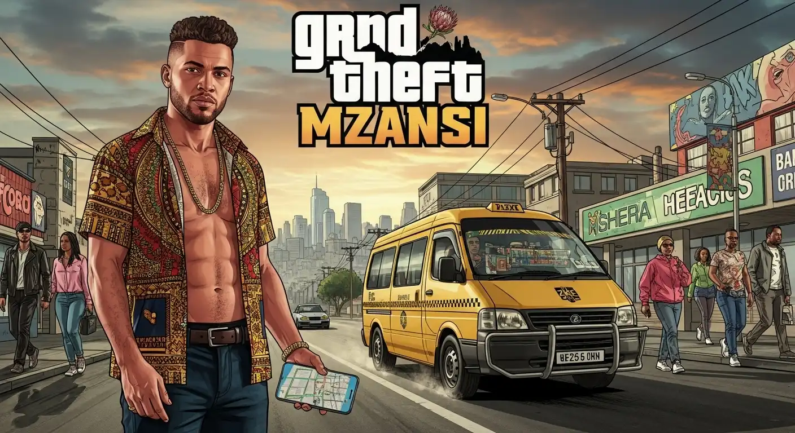
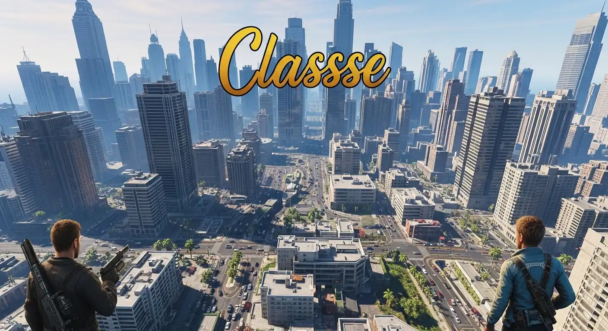

Best Video Games of 2025
Video games are more fun than ever. In 2025 we have games with big worlds, cool stories, and lots of ways to play. Whether you’re a beginner or have played many games, there’s something here for you.
Why 2025 is special
The year 2025 has brought a strong set of game releases across many genres. Reviewers and players agree this year is shaping up to be one of the best. Because of that, if you’re looking for great games now — or ones to watch — this list will help you pick.
Top Picks
GTA Mzansi
GTA Mzansi is a fun entry in the “GTA” world, but with a fresh local twist. You drive around, hear music, meet characters, and explore kasi vibes. It is easy to jump into and fun to play.
GTA 5
A modern classic. Even though it’s been around for a while, many players keep returning to it for big city open world game, many missions, and the online mode. It’s still relevant in 2025.
Assassin’s Creed Shadows
Set in feudal Japan, this game brings strong visuals and a dual‑hero system (you use two characters). One is stealthy, one is more direct. Reviewers say it thrives on boldness.
Monster Hunter Wilds
Big monsters, big weapons, and a vast open world. It’s designed for players who like to craft gear, fight big beasts, and team up.
Clair Obscur: Expedition 33
A standout indie game this year. It mixes strategy, turn‑based mechanics and strong storytelling. Many players call it one of the best of 2025 so far.
What makes these games good?
- Accessibility: Many have easier entry points; you don’t need to be a hardcore gamer.
- Strong visuals & story: The worlds feel alive, the characters matter.
- Variety: There’s something for open‑world lovers, story gamers, and indie fans.
- Platforms: Many games are on PC, PlayStation 5, and Xbox Series X/S — so more players can join.
- Optimised for 2025: Thanks to newer hardware and tighter design, many games feel smoother and richer.
How to pick your next game
- Choose a genre you enjoy (racing, action, RPG, indie).
- Find a game from the 2025 list above that fits your style.
- Watch a short gameplay video or read a quick review online.
- If you’re unsure, try an easier game first and then move to something bigger.
Final thoughts: 2025 is a great year for video games. Whether you want a relaxed fun session, a big story adventure, or a challenging experience — you have options. The picks above give you a mix of styles and scales. Take your pick, press start, and have fun!
FAQ
Are these games hard?
Some are easy. Some take time. You can try small parts first.
Where to get them?
Find games on official stores like Steam, PlayStation Store, or the game maker's site.
Contact / Booking
Say hi or ask a question using the form below.